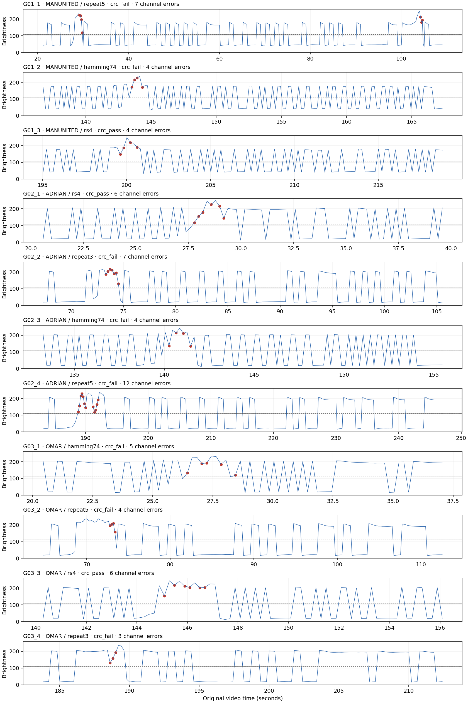

24 October 2026 · original phone videos retained · local analysis only
3/11 packets recovered exactly with a valid payload CRC. Every optical header is independently checked against its logged sequence, codec and message length; no transmitted message bits enter the decoder. Ground truth is used only afterwards to count errors.
| Original file | Logged batch | Packets | Exact CRC-valid recoveries | Header match | Full packet coverage |
|---|---|---|---|---|---|
| B01_NEW.MOV | G01 | 3 | 1 | True | True |
| B02_NEW.MOV | G02 | 4 | 1 | True | True |
| B03_NEW.MOV | G03 | 4 | 1 | True | True |
Channel errors are measured over coded body bits, including protected CRC/parity; payload errors are over message bits after correction. These denominators differ. A rejected codeword remains a failed packet with zero goodput and missing decoded-payload BER.
| Packet | Message | Code | Channel errors/bits | Payload errors/bits | Outcome | Goodput (bit/s) |
|---|---|---|---|---|---|---|
| G01_1 | MANUNITED | repeat5 | 7/440 | 1/72 | crc_fail | 0.0 |
| G01_2 | MANUNITED | hamming74 | 4/154 | 1/72 | crc_fail | 0.0 |
| G01_3 | MANUNITED | rs4 | 4/120 | 0/72 | crc_pass | 1.667 |
| G02_1 | ADRIAN | rs4 | 6/96 | 0/48 | crc_pass | 1.25 |
| G02_2 | ADRIAN | repeat3 | 7/192 | 2/48 | crc_fail | 0.0 |
| G02_3 | ADRIAN | hamming74 | 4/112 | 3/48 | crc_fail | 0.0 |
| G02_4 | ADRIAN | repeat5 | 12/320 | 2/48 | crc_fail | 0.0 |
| G03_1 | OMAR | hamming74 | 5/84 | 6/32 | crc_fail | 0.0 |
| G03_2 | OMAR | repeat5 | 4/240 | 1/32 | crc_fail | 0.0 |
| G03_3 | OMAR | rs4 | 6/80 | 0/32 | crc_pass | 0.909 |
| G03_4 | OMAR | repeat3 | 3/144 | 1/32 | crc_fail | 0.0 |
Initial framing and sampled sweep frames show the patch clearly. The light-source phone sometimes appears at the right side of the image; its presence there alone is not occlusion of the selected patch region. Bright reflections remain and can produce errors even when the camera view is unobstructed.
The first MANUNITED/repeat5 packet has at least two glare passes, visible near 29 s and 104 s. Preserve it as recorded and annotate the actual conditions; do not describe all packets as perfectly controlled one-second single sweeps. Small timing deviations do not invalidate recordings. Scene changes and unequal interference mean this is a descriptive comparison, not a causal ranking of codes.
These repeat the earlier eleven coded cases, and do not add new matching uncoded controls. Earlier videos and their original analysis remain separate. Success on a packet with zero channel errors demonstrates correct transmission; successful decoding after nonzero errors is the evidence of correction.
Fixed geometric ROIs were selected from early previews before reading decoded outcomes: G01 (1080,280,160,120), G02/G03 (900,260,160,120), in stored 1920×1080 pixel coordinates. Final brightness uses the existing OpenCV BGR-to-grayscale ROI mean. Frame timestamps come from FFmpeg decoded-frame PTS, with early timestamps independently checked using FFprobe and interior timestamps compared with OpenCV. The OpenCV backend's invalid first-frame timestamp is not used as the clock. No average-FPS clock is substituted. The existing fixed-threshold, preamble-clock receiver is unchanged. Packet windows are identified from optical headers with host timing used only to locate their search regions.
Blue: sampled bit brightness. Dashed: preamble-derived threshold. Red: wrong bit decisions, identified afterwards from the transmission log. Times refer to the original video.

Contact sheets are sparse visual samples around the planned cue, not continuous proof of the full interference duration or sweep count.
Additional late glare in first MANUNITED packet · Full result table (CSV) · Detailed metrics (JSON)